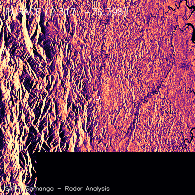
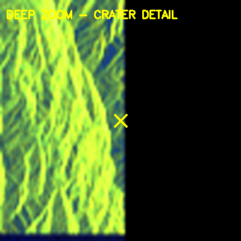

Visor SIG & Monitoreo Multi-Temporal (MT-InSAR)
Integración georreferenciada de dispersores PS / SBAS (Sentinel-1 SLC), vigor cafetero NDVI (Sentinel-2) y sismicidad SGC (OVSPop).
Tabla Cuantitativa Multi-Temporal (3 Épocas: Marzo – Noviembre 2026): SBAS vs. PS Metodología: Tamayo Duque et al. (2023) [ASI] & Ávila Vélez et al. (2026) [VAA / VEO]
| Zona / Sector Territorial | Método (Umbral ASI) | Ángulo θ | CD (Dispersores) | PV LOS (mm) | DV LOS (mm) | VAA Vertical (mm) | VEO Este-Oeste (mm) | Punto Ref. Estable (APS=0) |
|---|
Nota técnica: CD: Cantidad de píxeles coherentes detectados; PV LOS: Desplazamiento diferencial medio en línea de visión (mm); DV LOS: Desviación estándar (mm); VAA = V_LOS / cos(θ): Componente vertical arriba-abajo (mm); VEO = V_LOS / sin(θ): Componente horizontal este-oeste (mm). Serie Multi-Temporal procesada: S1A (10-Mar-2026) + S1C (16-Mar-2026) + S1C (06-Nov-2026) Track 142 Descendente y Sentinel-2 L2A (08-Nov-2026).
Series Temporales Geodésicas MT-InSAR / SBAS (Sentinel-1 2025–2026)
Inversión de deformación multitemporal acumulada d(t) [mm] sobre 29 fechas de radar calibrada con la estación GNSS continua GeoRED POVA.
Verde oscuro (0.80–0.95): Cafetales con sombrío y bosques de galería. Rojo/Naranja (0.25–0.45): Vías veredales, techos y beneficiaderos (coincidentes con nodos PS). Haz clic en la imagen para ampliar.

Vista óptica libre de nubes a 10 m del cráter principal del Puracé, laguna ácida y cadena Los Coconucos, junto con el interferograma filtrado por pantalla atmosférica (APS). Haz clic para ampliar.


Sismicidad Volcánica Reciente (SGC / OVSPop)
Graphify: Arquitectura Viva del Proyecto
Mapa integral de conexiones entre sensores Copernicus, entorno Docker, scripts locales, biblioteca científica y territorio.
Arquitectura End-to-End (6 Capas Conectadas — Actualizado Nov 2026)
• Sentinel-1A/1C IW SLC
• Sentinel-2 L2A (10m + Red Edge)
• ECMWF ERA5 & SGC OVSPop
• download_s1_latest.py
• batch_download_sar.py
• download_s2_latest.py
• sgc_live_data.py
• Contenedor copernico-dev (Bookworm + GDAL)
• Nginx Alpine (Puerto 8085)
• SNAP GPT + OpenCV
• Serie Dr. Dinh (PS+DS InSAR, TomoSAR, BIOMASS)
• Serie Geoscience (MintPy, ISCE2, GPR, ERA5)
• Mapa_NDVI_Samanga_Baja_AltaRes_2026.png
• purace_ifg_v3_final.png
• samanga_asi_ps_sbas.png
• Caficultura Samanga Baja
• Alianza CTeI (UNIMAYOR + TECNICAFÉ)
• Red OVSPop (SGC)
Novedad de Despliegue: Dockerización Ligera & Estable
• Entorno Científico Contenerizado: Servicio copernico-dev con Python 3.10 Bookworm, GDAL y dependencias nativas (rasterio, geopandas, rioxarray, asf-search, cdsapi), reduciendo el consumo a < 1 GB RAM.
• Dashboard en Vivo (Puerto 8085): Servicio Nginx independiente con bind mount en caliente hacia dashboard/ y outputs/dashboard/.
• Biblioteca Técnica Integrada: Disponibilidad local de los 8 manuales técnicos de C:\Copernico\Documentos para soporte metodológico continuo.
Hallazgos Técnicos Clave Documentados en tus Escenas
1. Serie Temporal de 3 Épocas Sentinel-1 (Marzo – Noviembre 2026): Integración de S1A (10-Mar-2026), S1C (16-Mar-2026) y la nueva escena S1C (06-Nov-2026) en Track 142 Descendente, permitiendo evaluar la estabilidad multimes (ASI) tanto en Samanga Baja (IW2 VV) como en el Volcán Puracé (IW1 VV).
2. Mosaico Óptico Sentinel-2 L2A de 10 m (Actualizado al 08-Nov-2026): Combinación de las bandas B02, B03, B04, B08 y máscara de nubes SCL para cartografiar el vigor cafetero de Samanga Baja (NDVI medio 0.817) y el cráter del Volcán Puracé a 10 m de resolución.
3. Corrección de Byte Order ENVI: Lectura nativa en formato Big-Endian (>f4) de las matrices de ESA SNAP sin pérdida de precisión flotante.
Base Científica e Investigación Aplicada
Fundamentos teóricos y estudios de referencia en Colombia aplicados a Samanga Baja, Puracé y Sotará.
Paper 1: PS-InSAR vs. SBAS en Veredas Andinas (Ávila Vélez et al., 2026)
Estudio en veredas rurales de Arbeláez (Cundinamarca) con 27 escenas Sentinel-1 SLC y SRTM de 30 m. Demuestra que PS (Dispersores Persistentes) es ideal para infraestructura fija (techos de fincas, beneficiaderos, vías y roca volcánica), mientras que SBAS (Small Baseline Subset) logra un 17% más de cobertura en zonas rurales con vegetación y cultivos. Descompone la velocidad LOS mediante V_vertical = V_LOS / cos(θ) y V_este_oeste = V_LOS / sin(θ).
Archivo Local: C:\Copernico\articulo_umng_7889.pdf
Paper 2: MT-InSAR Dual + Red GNSS del SGC (Tamayo Duque et al., 2023)
Combina 107 escenas Ascendentes + 153 Descendentes de Sentinel-1 IW SLC (VV). Filtra el ruido de vapor de agua atmosférico (APS - Atmospheric Phase Screen) seleccionando nodos mediante el Índice de Estabilidad de Amplitud: ASI = 1 - (σ_A / m_A) > 0.75 y anclando un punto de referencia en roca dura estable. Valida las velocidades milimétricas directamente contra estaciones GNSS continuas del SGC / SIRGAS y niveles de aguas subterráneas.
Archivo Local: C:\Geomatica\remotesensing-15-05249.pdf
Monitoreo Agroambiental en Samanga Baja (Sentinel-2 + Sentinel-1)
Articulación de índices espectrales ópticos de 10 m (NDVI para vigor de cafetales, sombrío y microcuencas) con estabilidad de amplitud radar (ASI) sobre las fincas de Samanga Baja y vigilancia interferométrica sobre la Cadena Volcánica de Los Coconucos (Puracé) y el Complejo Volcánico Sotará.
Archivo Satelital Procesado (Actualizado Nov 2026)
Haz clic sobre cualquier imagen para abrirla en tamaño completo.
Samanga Baja — Mapa NDVI Alta Resolución (10 m)
Vigor cafetero y cuencas (Media: 0.817 | 220 DPI)
Samanga Baja — Color Real 10m vs. NDVI
Mosaico Sentinel-2 L2A (Actualizado 08-Nov-2026)
Volcán Puracé y Los Coconucos — Color Real 10 m
Cráter principal, laguna ácida y centros eruptivos (S2 L2A)
Puracé — Fase D-InSAR (APS Filtrado Mar–Nov 2026)
Sentinel-1A/1C IW1 VV (SRTM 1Sec 20m)

Samanga Baja — Estabilidad Radar 3-Épocas (ASI)
Nodos PS (>0.75) y SBAS (0.60–0.75) en IW2 VV

Sotará — Retrodispersión SAR IW1 VV
Monitoreo del Complejo Volcánico Sotará
Caja de Herramientas (C:\Copernico)
Inventario documentado de tus scripts de Python y procesadores satelitales.
-
mt_insar_asi_sbas.py 3 ÉPOCAS (MAR–NOV 2026)
Motor Multi-Temporal: procesa las escenas Sentinel-1 SLC (10-Mar, 16-Mar y 06-Nov-2026), calcula el Índice de Estabilidad de Amplitud (ASI), clasifica dispersores PS (>0.75) y SBAS (0.60–0.75), filtra pantalla atmosférica (APS), proyecta componentes Vertical (VAA) y Este-Oeste (VEO) y exporta capas para Leaflet.
-
process_s2_updated.py + render_ndvi_highres.py NUEVO (10m)
Procesador multiespectral Sentinel-2 L2A (B02, B03, B04, B08 a 10 m + máscara de nubes SCL a 20 m): genera los mosaicos en Color Real de Samanga Baja y Volcán Puracé y el Mapa NDVI de alta resolución (220 DPI).
-
download_s1_latest.py + download_s2_latest.py
Clientes selectivos de alta velocidad conectados a la API OData
Nodesde Copernicus Data Space Ecosystem para descargar sub-franjas específicas (IW1/IW2 VV) y bandas ópticas de 10 m. -
sgc_live_data.py
Consulta el servicio ArcGIS REST de sismicidad reciente del Servicio Geológico Colombiano y actualiza sgc_data.js con coordenadas georreferenciadas.
Cámaras & Telemetría Visual en Línea
Monitoreo visual continuo, cámaras web telemétricas del SGC / OVSPop, termografía infrarroja del cráter y archivo audiovisual de vigilancia volcánica.
Red de Vigilancia Óptica e Infrarroja (SGC / OVSPop)
Cámara El Púlpito
EN LÍNEAUbicada con vista frontal al cono activo del Volcán Puracé. Opera con sensor dual de luz visible e infrarrojo térmico (IR) para detección de incandescencia nocturna.

Cámara Curiquinga
EN LÍNEAMonitoreo directo del campo fumarólico de Curiquinga y la cadena de Los Coconucos. Seguimiento de columnas de vapor, gases sulfurosos y dinámica hidrotermal.

Cámara Mina 2
EN LÍNEASupervisión de las antiguas azufreras de Puracé y flanco oriental. Detecta posibles desprendimientos rocosos y variaciones en la emisión de gases a nivel de ladera.

Termografía Infrarroja (FLIR) & Detección de Anomalías Térmicas
Mapa Térmico del Cráter (Sobrevuelos FLIR)
La termografía infrarroja permite discriminar áreas de ascenso magmático y aumento de temperatura en las fumarolas (>150°C), distinguiendo el domo central de las paredes frías del cono.

Vigilancia del Complejo Volcánico Sotará
Monitoreo del edificio dacítico del Sotará y sector Cerro Azafatudo. Seguimiento de micro-sismicidad volcano-tectónica asociada a la falla de Romeral.

Video en Línea & Transmisiones SGC
Canal de difusión científica y transmisión en directo del Servicio Geológico Colombiano durante eventos de emisión de ceniza y boletines semanales de actividad.
Canal Oficial SGC en YouTube
Acceso a ruedas de prensa, sobrevuelos técnicos y videos explicativos del OVSPop.
Abrir Canal de Video SGC